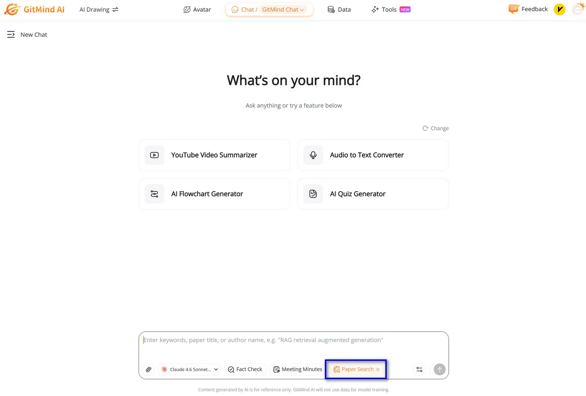

GitMind 这几年迭代了什么——从思维导图到 AI 研究助手的路线图
从样本文档透露的版本线索出发，梳理 GitMind 近年的功能演进轨迹，看看团队在死磕什么、哪些方向一直没碰，以及下一步可能走向哪里。
一个观察者的版本史
现在打开 GitMind，最先跳出来的不是一张空白导图画布，GitMind官网的首页也摆着这一排 AI 工具箱入口——论文检索、AI 对话、文档转导图、语音转文字……这些东西放在几年前是不可想象的。我第一次接触 GitMind 时，它还是个定位清晰的思维导图工具，画节点、调布局、导出图片，仅此而已。今天它长成了什么样子，又是怎么一步步走到这的？
样本文档给了我一个线索：2026 年 4 月，GitMind 上线了「论文检索」功能——可以直接搜索学术文献，AI 解读后还能生成导图骨架。这不是一个孤立的功能，它是一整条 AI 能力链上的最新一环。往前追溯，AI 工具箱这个模块本身的出现、AI 生成流程图的加入、语音输入灵感流的打通，这些版本节点串起来，其实能看出一条清晰的演进逻辑。
从"画导图"到"帮你思考"的转向
样本文档没有提到早期历史——没有 changelog、没有版本号里程碑，甚至连"最初什么时候发布"都没写。这本身就是一个有意思的信号：GitMind 团队好像不太在乎对外宣称自己的"起源故事"，他们更愿意让用户直接看到现在能用什么。但从功能覆盖反推，几个关键转折点还是能拼出来的。
第一个转折点是多端同步的定型。样本文档明确列出了 Windows、macOS、Linux、iOS、安卓、网页版、Chrome 扩展七个平台，各端安装包从下载就能拿到，而且强调"一套账号、多端同步、实时保存"。这件事听起来像基础能力，但做过跨端产品的都知道——思维导图这种需要频繁交互的应用，在手机上操作的流畅度、在平板上配合手写笔的体验、在浏览器里不开装即用的完整性，每一端都是独立的工程难题。从文档里能看到，手机端已经支持 AI 生成流程图、语音输入、OCR 识图，只是白板文件还不能编辑——这个"只可查看"的差距说明，各端功能对齐不是一蹴而就的，是持续迭代出来的。
第二个转折点是跳出思维导图品类。样本文档的目录结构已经不只是"节点编辑""样式布局"这些导图专属章节了，它有完整的「白板」模块、有「流程图」章节、有「AI 工具箱」五大分类。这意味着 GitMind 不再把自己定义为"思维导图软件"，而是往更广义的"可视化思考工具"扩张。概要括号和关联线这两个功能——文档里专门给了一页——就是这种扩张的佐证：概要框可以把一组并列节点圈起来做总结，关联线可以跨分支建立关系，这两个东西在纯思维导图的树状结构里本不存在，但在更复杂的思考场景里（读书笔记的跨章节关联、项目导图的阶段交付物圈定、头脑风暴的采纳方案标记）是刚需。
AI 路线：这才是真正的主战场
但上面两个转折点，本质上还是传统工具逻辑的深化。真正让 GitMind 和其他思维导图产品拉开差距的，是AI 工具箱的持续加码。
GitMind文档里，AI 相关的内容已经占了五个大章节：AI 对话、文档转导图、论文检索、事实核查、语音视频转写。而且这不是"加一个 AI 按钮"那种敷衍做法——论文检索那个功能的设计尤其值得说：搜论文 → AI 解读摘要方法结论 → 值得精读的下载原文用文档转导图拆结构 → 多篇文献的结构图汇成总导图形成综述骨架。这是一条完整的科研工作流，从信息获取到结构化整理再到产出，全链路嵌进了一个导图工具里。

论文检索里提到的"消耗算粒"这个表述也挺有意思——说明 GitMind 的 AI 功能不是无限免费的，有自己的计费体系。这意味着团队在 AI 能力上的投入不是试验性质的，而是当成核心商业模式在做。
什么一直没碰？
说完了一直在死磕的方向，再看看什么东西样本文档里完全没提。
离线模式——文档里明确写了"软件需要联网才能实时保存与协作，没有离线模式"。这在思维导图领域其实是个有争议的选择：有的用户就是要在飞机上、在网络不好的会议室里画图。但 GitMind 从一开始就押注云端，同步、协作、AI 调用全都是联网才能用的能力，这条路线一直没变过。
插件生态——没有提到任何第三方插件、API、Webhook 之类的开放能力。AI 工具箱里的功能全是自家做的，没有给开发者留口子。这说明团队目前还是想自己把核心体验攥在手里，不想让外部力量分散精力。
团队协作场景的深挖——样本文档提了"共享与协作"有相关说明，但没有展开多端协同编辑、权限管理、版本历史这些团队场景的细节。对比 AI 工具箱的篇幅，协作显然不是当前优先级。
从迭代规律推下一步
如果把这些观察串成一条时间线，GitMind 的演进节奏大概是：先把多端同步做扎实，然后品类扩张到白板和流程图，最近两年全力押注 AI 工具箱。这个节奏里有一个很明显的特征——每一个新能力都和现有的导图中心结构紧密挂钩。AI 对话的输出可以直接生成导图，文档转导图是把外部资料导入导图结构，论文检索的终点是汇成综述骨架，连语音输入都是"灵感流"形式——想到什么说什么，自动变成节点。
按照这个逻辑往下推，下一步大概率会继续深化 AI 能力链上还没打通的环节。比如论文检索现在是"搜 → 解 → 转导图"，但导图之后的分析、对比、自动生成综述大纲会不会接上？再比如语音输入现在只是"灵感流"，能不能变成更结构化的会议纪要自动拆解？还有一个可能——既然 AI 已经能生成导图、能解读文献，那反过来让 AI 帮你复盘自己的导图结构，指出逻辑漏洞、补全遗漏分支，这个方向样本文档里还没有触及。
当然这些都是从迭代规律推的，不是官方口径。但有一件事可以确定：GitMind 目前的重心非常明确——AI 能力不是锦上添花的附加功能，而是整个产品的第二增长曲线。论文检索这种功能放在三年前谁也想不到会出现在思维导图软件里，而今天它已经成了样本文档里最新、最受篇幅照顾的章节。
对我这个老用户来说，看着 GitMind 从一个单纯的画图工具长成现在的样子，最有意思的不是它加了多少功能，而是它始终没丢导图这个根。不管 AI 能力堆得多高，最后都要落到导图结构上——这大概就是它和那些大而全的 AI 笔记产品之间，还能守住差异化的地方。
如果你对这个产品的完整资料感兴趣，可以去官网找到最新版本，安装包从官方下载拿，深入用法和参数细节在 GitMind 文档里写得更全。这套资料我在三个仓库都有备份方便随时查阅——GitHub、Gitee、GitCode，国内网络环境下 Gitee 和 GitCode 访问通常更稳定。